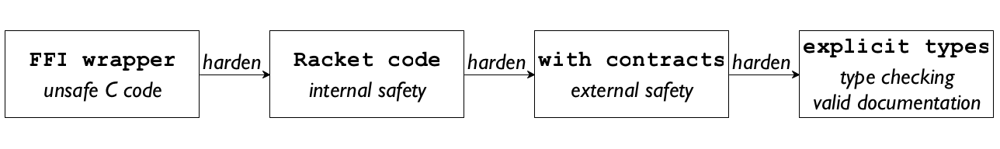

4 Racket Covers a Full Programming Language Spectrum
An abstraction enforces invariants. Languages are abstractions, and their
creators must have the means to build the necessary enforcement
mechanisms—
ffi.rkt
#lang racket (provide ; [Vectorof [Vectorof Real]] -> [Vectorof Real] simplex) ; IMPLEMENTATION (require ffi/unsafe) (define lib-simplex (ffi-lib "./coin-Clp/lib/libClp")) (define (simplex M) ... (-simplex-set ...) ...) (define -simplex-set (get-ffi-obj "simplex" lib-simplex (fun bytes -> void))) Figure 3: A Racket module using the foreign-function interface
To get a sense of what these enforcement requirements may mean, consider the kinds of languages a Racket programmer may build. As the literature on domain-specific languages suggests (Fowler 2010), these constructions are often thin veneers over efficient C-level implementations. To support this kind of language, Racket comes with a foreign interface that allows parenthesized C-level programming. Programmers can refer to a C library, import functions and data structures, and wrap these imports in Racket values. Figure 3 shows an example of a module that imports functions from the coin-Clp simplex library and defines regular racket functions around them.
At the other end of the spectrum, a Racket programmer might wish to annotate an existing module with explicit types and expect type soundness. Doing just that is possible with typed/racket. Figure 4 illustrates how to transform the module from figure 1 into a typed one. Adding types moves knowledge out of comments into a statically checked sub-language, which proves the comments’ validity and thus “hardens” (Wrigstad et al. 2009) the component, because the invariants of the typed language are properly protected as its values flow into untyped components of the world.
demo-typed.rkt
#lang typed/racket (provide walk-simplex) (: walk-simplex (-> Natural Video)) ; IMPLEMENTATION (require/typed 2htdp/image [#:opaque Image image?]) ... (define-type Video [Listof Image]) (define (walk-simplex timing) ... (maximizer #:x 2) ...)
While Racket does not automatically protect such flows of values, it comes with
the tools to build invariant-enforcement mechanisms. Technically, it provides
Miller’s proxy mechanism (Miller 2006)
tailored to the needs of a Racket
language builder. Racket’s proxies come in two tiers:
chaperones and impersonators (Strickland et al. 2012).
Each monitors access to an underlying value to
guarantee basic invariants. Programmers can create customized proxies that
monitor access to functions, immutable values, mutable structures and
objects—
demo-contract.rkt
#lang racket (provide (contract-out [walk-simplex (-> natural-number/c (listof image?))])) ; IMPLEMENTATION (require "small.sim" 2htdp/image) (define (walk-simplex timing) ... (maximizer #:x 2) ...)
Racket offers a comprehensive contract system implemented with the proxy mechanisms. The contracts allow components to express Eiffel-style first-order assertions (Meyer 1992). The introduction of contract boundaries smoothly generalizes these first-order statements to Racket’s higher-order setting. That is, with contracts a component can advertise promises and obligations on values such as closures (Findler and Felleisen 2002), objects, classes (Strickland et al. 2013), and modules (Strickland and Felleisen 2009).
contract-higher-order.rkt
#lang racket (define MBTA/c (class/c [find-path ; (find-path f t) finds paths from f to t (-> station/c station/c [listof path/c])] ...)) (define (station? s) ...) (define path/c ...) (provide ; does the given value represent a T station? station? (contract-out [mbta% ; represent the state of the MBTA with search functionality MBTA/c] [read-mbta-graph ; an MBTA/c factory (-> (object/c mbta%))]))
Figure 5 shows how to express the comments from figure 1 into a contract. The conventional prefix syntax of the contract says that walk-simplex is a function, that this function accepts only natural numbers (0, 1, 2, and so on), and that it returns a list of images (checked with the image? predicate from the library). Racket checks this first-order contract in the expected way: if a client module applies the function to something other than a natural number, the client is blamed for a violation; if walk-simplex ever returns something other than a list of images, contract.rkt is blamed; and if there is no use, no error message is ever signaled even if walk-simplex were defined to return a string.
The extract of a module in figure 6 illustrates the use of higher-order contracts. Its header introduces two contracts and a flat predicate and exports the latter plus a contracted version of a class and its factory.
Currently, typed/racket (Tobin-Hochstadt and Felleisen 2008) is the most important client of proxies and contracts. From a mechanical perspective, typed/racket is like at-exp simplex. From the teleological one, the two languages radically differ from each other; typed/racket is a sibling of racket, not just an arbitrary language implemented in the Racket world. As mentioned, its purpose is to help programmers harden untyped modules by equipping them with types.
While type checking guarantees consistency within the module and with respect to other typed modules, translating types of exported values into run-time contracts ensures a general form of type soundness, known as Tobin-Hochstadt’s Blame Theorem.As a library-based language, typed/racket is on the same footing as other libraries in the Racket ecosystem. Thus it cannot defend its invariants as thoroughly as typed languages such as Java or OCaml. Closing the remaining loopholes to enable more complete guarantees is ongoing research. For example, when a typed module exports a function on integers to an untyped module, the latter must not apply the function to a string; similarly, if a function on integer-valued functions flows from the typed to the untyped world, the latter must promise not to apply it to complex functions.
Figure 4 and figure 5 demonstrate this types-to-contracts translations in a concrete manner. The type of walk-simplex in the former translates to the contract shown in the latter. While this translation is straightforward for the functional core, extending this work to Racket’s class-oriented fragment is the fruit of a multi-year research project (Takikawa et al. 2015; Takikawa et al. 2012). This extension implements both novel contract mechanisms for Racket’s first-class classes as well as critical performance enhancements in the types-to-contracts translator.

With contracts and types, Racket includes a full spectrum of programming languages and, importantly, allows programmers to incrementally harden their “scripts” into programs. Initially, a Racket programmer may write a “script” in the traditional sense, that is, a thin layer around a C library. Assuming the choice of C is not performance-critical, the programmer could move the code to Racket, gaining operational and memory safety for the module in return. The third step would be the addition of contracts to the exports of this library to protect interactions between clients and the library. Finally, a programmer may equip the code with explicit, statically checked types, which creates validated documentation, improves the performancePerformance enhancements can be realized under certain conditions; in general, types-as-contracts may reduce performance and often require performance tuning. and maintainability of the code, and may reveal subtle mistakes. Figure 7 summarizes the hardening process in the Racket language spectrum diagrammatically.
While both contracts and types play a central role in this hardening process, the development of typed/racket is far more interesting from a linguistic perspective. Equipping racket with a type system is a challenging task. Programmers who use dynamically typed languages superimpose their own reasoning system as they design their code. It is fair to call this reasoning system a type system. Often this informal type system resembles naive set theory; at other times it incorporates elements from several different type systems.
The design challenge for typed/racket is to bring all of these informal type systems
together in one framework—